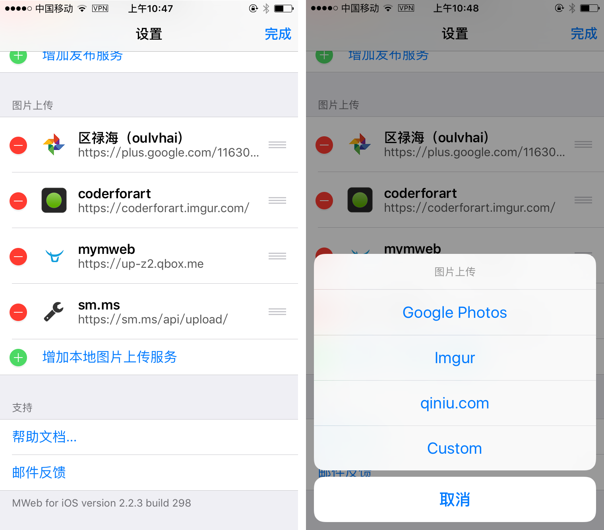
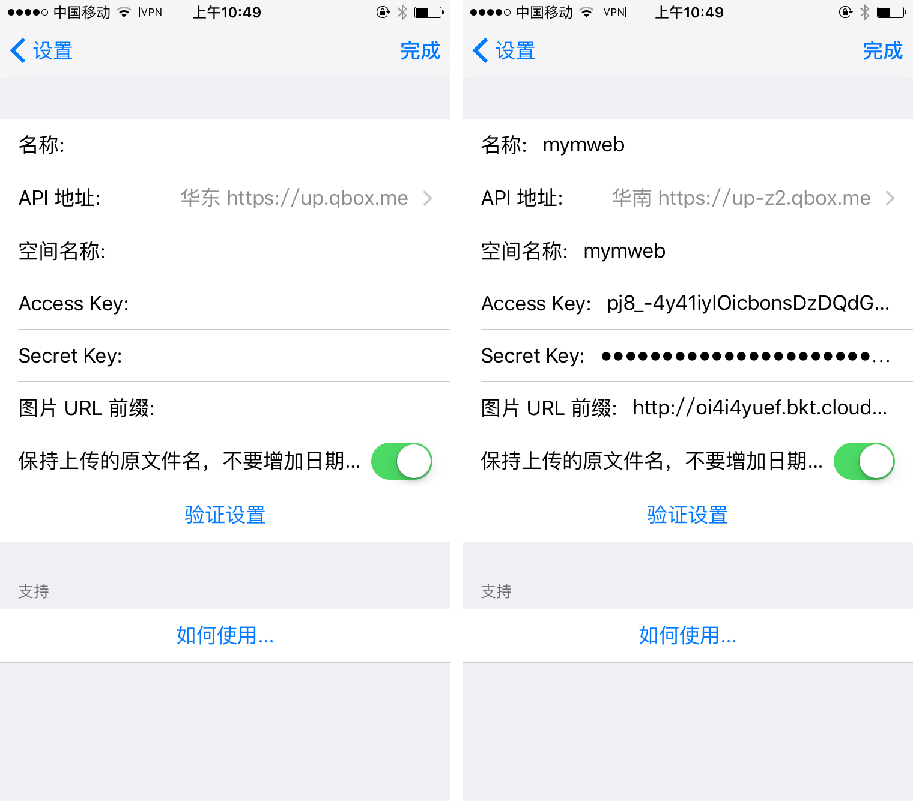
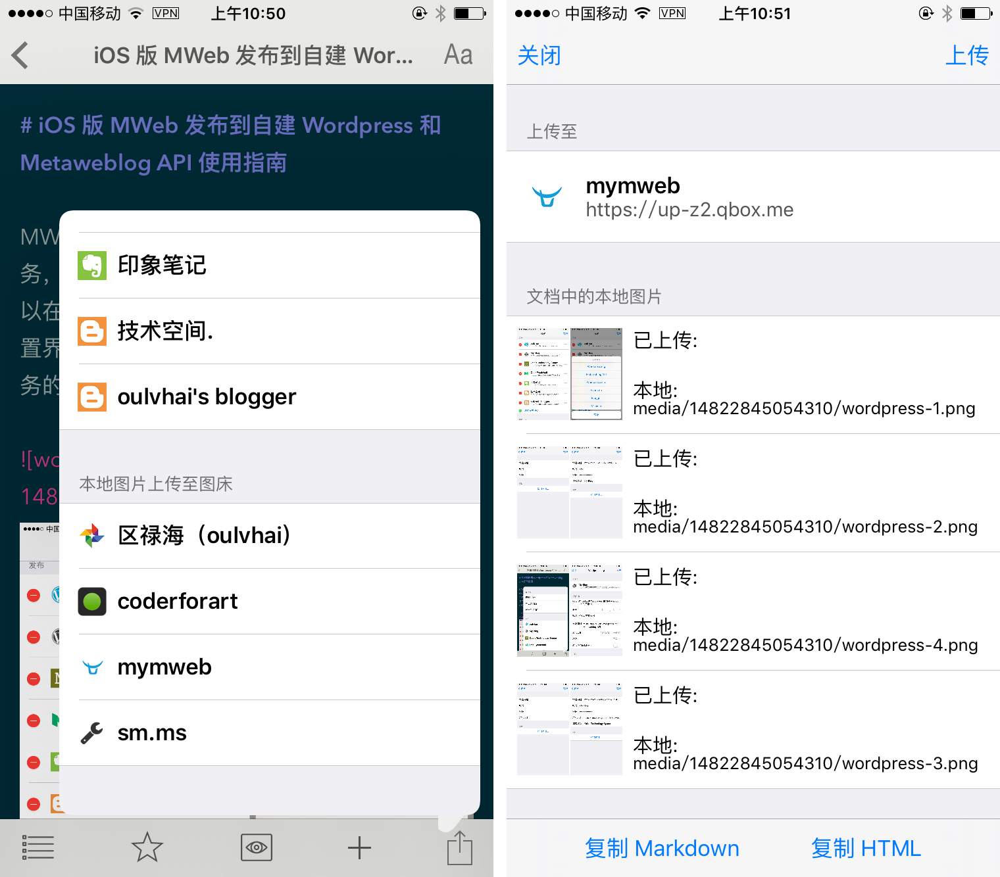
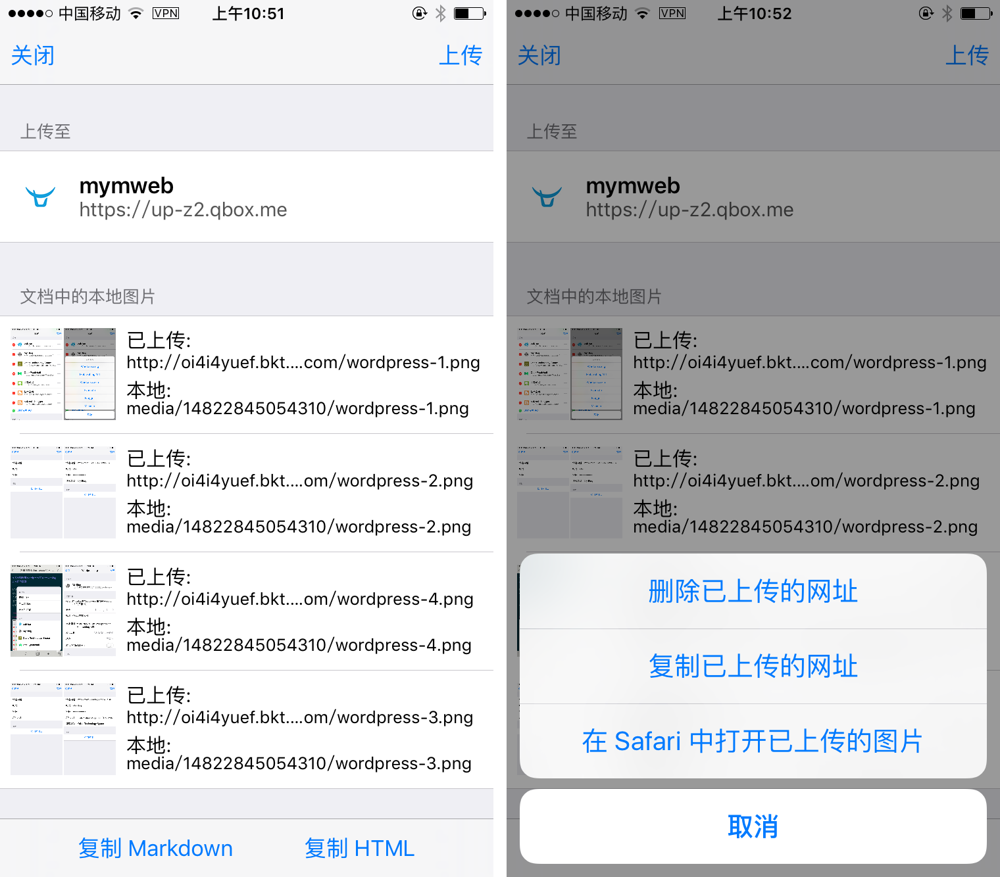

iOS 版 MWeb 图床功能及七牛图床使用指南
首先说说 iOS 版 MWeb 中的图床的功能：把 Markdown 中的本地图片替换成图床的图片，直接分享出去或者转成 HTML 后再分享出去。如果你没有这种使用场景，应该用不到图床功能。
MWeb 中插入的图片都会保存在 Markdown 文档的相对位置，也就是都为本地图片，不会像其他编辑器那样，插入图片时，先上传到图床，然后再返回图片的地址并插入。当文档编辑完成后，才会使用图床功能，把文档中的本地图片上传到所选图床中。当图片上传完后，使用 “复制为 Markdown” 或 “复制为 HTML” 按钮，会把文档中的本地图片替换成图床的图片，然后复制到剪切板中，但是原文档的图片地址还是本地图片，并不会改变。这种方式的好处是，不会因为图床问题而丢失图片，可以轻松切换不同的图床。
下面介绍一下图床的用法，首先，要新增图床服务。在首页中，点左上角的 “设置” 按钮，进入设置界面，并滑动到底部，就可以看到 “增加本地图片上传服务” 这个按钮了，如下图左边的图。点击后，可以选择增加那种图床。MWeb 支持 Google Photos、Imgur、七牛、自定义这四种图床。其中 Google Photos 和 Imgur 增加方法非常简单，选择后，提示登入时，用自己的帐号登入即可，这里不多做说明了。这里只说一下七牛图床的增加方法，自定义图床会另开一篇文章说明。

选择上图右边的图片中的 “qiniu.com” 后，就会出现下图左边的增加七牛图床的界面，右边的图是增加后的效果。各字段说明如下：
- 名称：填入自定的名称即可。
- API 地址：这个是跟你七牛中新增存储空间时选择的存储区域有关联的，目前共四个区域，请选择正确的区域的 API 地址，不然会出错。
- 空间名称：你在七牛中新增的空间的名称。
- Access Key 和 Secret Key：在 七牛个人面板 - 密钥管理 中可以找到，写此文时的网址为：https://portal.qiniu.com/user/key。
- 图片 URL 前缀：选择存储空间后，在测试域名那里可以看到了，我这里是：oi4i4yuef.bkt.clouddn.com。要注意的是不是直接填入 oi4i4yuef.bkt.clouddn.com，要填入完整的网址，比如说我这里是：http://oi4i4yuef.bkt.clouddn.com/
当你点验证设置这个按钮时，会尝试上传一张小图片至你设置的空间，看看是否成功。

当增加完成图床服务后，要使用图床服务，非常简单，打开或者新增文档，插入图片后，点右下角的 “分享” 按钮，在弹出的界面中滑动到最底下，就会看到之前新增的图床服务，如下图左边的图。选择刚刚新增的 “mymweb”，后就会出现下图右边的图的界面，界面中会列出文档中的所有的本地图片。

当你点击右上角的 “上传” 按钮后，就会把本地图片上传至图床中了，如下图左边的图所示。当上传完成后，就可以点击底部的 “复制 Markdown” 或 “复制 HTML” 按钮了，这两个按钮都会把本地的图片换成图床的，并把内容复制到剪切版中。
当你文档有变动，比如说新增了图片时，可以再调出这个界面，再点右上角的 “上传” 按钮即可。

上图右边的图是点击某项图片弹出来的菜单，如果选择 “删除已上传的网址”，就会把所选的图上的已上传网址删除，这时你再点右上角的 “上传” 按钮，就会重新上传图片。